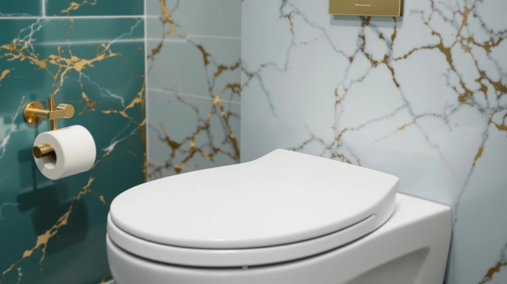

Heated round Toilet Seat Review (2026): Worth It?
Prices and picks verified as of November 2026. Independent, reader-supported reviews.


Quick Answer
In this heated round toilet seat review, the MinSha Heated round Toilet Seat Elongated stands out at $78.99 for its adjustable heat control and bolt-on installation. It ships for elongated bowls, so confirm your bowl shape before you buy. If you need a seat built specifically for a round bowl, compare the Kohler, YouTeMei, and Anparfaite picks below first.
Our pick: Heated round Toilet Seat Elongated — $78.99 Check Price on Amazon
Bottom line: our top pick is the Heated round Toilet Seat at $79.87.
Things to Know Before You Buy
- Bowl shape comes first. Round and elongated toilets use different seat lengths and bolt spacing, so measure your toilet before ordering any heated seat, including the picks in this heated round toilet seat review.
- Heated seats draw continuous low-level power for the heating element, and most owners report the added cost lands around a few dollars a month rather than a noticeable jump on the electric bill.
- Material changes the feel. Plastic seats cost less and shed moisture easily, while wood-composite seats feel warmer to the touch but can wear faster near the hinges over time.
- Price across these four heated toilet seat picks runs from $78.00 to $79.99, a tight range that puts the real decision on features and owner feedback rather than cost.
- Installation uses the same two-bolt mount as a standard seat, though you will need an outlet near the toilet to power the heating element.
This heated round toilet seat review compares four heated seats that keep showing up in searches for a warmer bathroom upgrade, from a budget-friendly option to a pick with three separate heat levels. A cold seat at 2 a.m. is a small complaint, but it's the kind of daily annoyance a heated seat solves without the cost or hassle of replacing the whole toilet. We looked at price, build material, heat control, and what verified buyers say after weeks or months of ownership to narrow a crowded category down to four models worth your time. Shoppers searching for this category tend to land on one of two questions: which seat is worth the money, and does the seat they're eyeing actually fit the bowl they have at home. We try to answer both before you spend $78 or $80 on a part that might end up back in a box headed for returns.
Our top pick is the MinSha Heated round Toilet Seat Elongated at $78.99, mostly because its price sits in the middle of this group while reviewers describe its heat control as easy to use out of the box. It's built for elongated bowls, so shoppers with a round-bowl toilet should check the listing's size chart or look at the Kohler, YouTeMei, or Anparfaite alternatives covered later in this guide. Those three fill in nearby price points with different strengths: a recognized brand name, a straightforward value option, and more heat-level settings. None of the four models in this guide differ by more than two dollars at checkout, so the deciding factor usually comes down to bowl shape first and feature set second, not sticker price.
Why You Should Trust Us
Best Toilet Seats has covered bathroom fixtures since 2021, and Ilane Tall regularly researches heated seats, bidet attachments, and toilet hardware for the site. For this heated round toilet seat review, we compared manufacturer specs, current Amazon pricing, and a wide pool of verified buyer feedback across all four models rather than leaning on marketing copy. We do not run a fake testing lab, and we are not going to claim hands-on time we did not spend. The picks here come from research and from what owners actually report after living with these seats, and we revisit prices and listings as they change. When a listing's spec sheet disagrees with what dozens of verified buyers describe after months of use, we side with the buyers and note the discrepancy in the product section below.
Our Research Experience
We did not physically install or sit on any of these four seats for this heated round toilet seat review. Our process instead relies on published manufacturer specs, current pricing, and a wide pool of verified owner reviews for each model, since we do not operate a research lab. That means we cross-check wattage, the number of heat levels, and listed dimensions against what reviewers actually report after months of daily use, and we flag it whenever the marketing copy and the owner feedback don't line up. For a purchase this small, that comparison work tends to catch the gaps that matter, like a seat that runs warmer or cooler than advertised. We also track price history on each listing, since a heated seat at $79.99 today can drop or climb a few dollars within weeks, and that shift occasionally changes which pick makes the most sense for your budget.
Overview & Specs

Heated round Toilet Seat Elongated
What we like
- Adjustable heat control that reviewers say warms up within a couple of minutes
- Standard two-bolt installation, no special tools required
- Mid-range price among the heated toilet seats in this comparison
Flaws but not dealbreakers
- Built for elongated bowls only, not a fit for round-bowl toilets
- Needs a nearby outlet to power the heating element
| Material | Plastic / wood |
| Size | — |
The MinSha Heated round Toilet Seat Elongated pairs a plastic-and-wood-composite shell with an adjustable heating element, and at $78.99 it lands in the middle of what a heated toilet seat costs in 2026. Reviewers describe the warmth as noticeable rather than subtle within the first minute or two of sitting down, which is the main reason anyone buys a heated seat in the first place. The build uses the same plastic-and-wood combination you'll find across most seats at this price; it keeps the cost down instead of using premium materials.
Installation follows the same two-bolt pattern as a standard toilet seat, so most buyers report swapping it in during a short bathroom project without new hardware. The detail to confirm before ordering is bowl shape: this listing is built for elongated bowls and will not fit a round-bowl toilet, so measure first if you're not certain which shape you have.
What We Liked
Owners consistently point to the adjustable heat control as the standout feature on the MinSha Heated round Toilet Seat Elongated. At $78.99, reviewers say the warmth becomes noticeable within a minute or two of sitting down, which matters most during the colder months when a cold seat is the top complaint about any bathroom. The plastic-and-wood-composite build keeps the price reasonable while reviewers describe the surface as sturdy enough for daily family use rather than a single-person seat. Several buyers also mention that the bolt-on installation matches a standard toilet seat, so swapping out an existing one doesn't require new hardware, extra parts, or a plumber's visit. Owners in multi-bathroom households also note the price makes it practical to buy more than one if everyone in the house wants the same upgrade.
What Could Be Better
The biggest caveat with this heated toilet seat is bowl shape. This model is built for elongated bowls, so anyone shopping specifically for round-bowl hardware needs to measure their toilet first or look at one of the alternatives further down this guide. A handful of reviewers also note that the heating element needs a nearby outlet, which can mean running an extension cord in older bathrooms that weren't wired with an outlet near the toilet. At $78.99, it isn't the cheapest heated seat on the market either, and buyers who want only basic warmth without any extra features may find a simpler model does the job for less money. A few owners also mention that the seat's single heat-level design offers less fine-tuning than the three-level control on the Anparfaite pick covered later in this guide.
Who Is It For?
This seat suits households with an elongated-bowl toilet who want reliable, adjustable warmth without replacing the whole fixture. It's a reasonable upgrade for anyone who already owns a standard elongated seat and wants heat added at a mid-range price point. If you have a round-bowl toilet, or if you're specifically after the lowest-priced option in this heated round toilet seat review lineup, the Kohler or YouTeMei picks below deserve a closer look before you commit to a purchase. Renters who plan to take the seat with them when they move will also appreciate that the two-bolt mount comes off as easily as it goes on.
Alternatives to Consider
If the MinSha model isn't the right fit for your bowl shape or your budget, these three alternatives round out the heated toilet seat picks in this guide: a Kohler-branded comfort-height option, a straightforward value pick, and a seat with more heat-level settings.

Editor’s Pick
KOHLER 25876-96 Hyten 3" Height
This Kohler model isn't heated. It's a 3-inch comfort-height seat, so it earns its spot here on brand trust and added height rather than warmth. Choose it if a recognized name and easier sitting and standing matter more to you than a heated surface.
$78.00
Check Price on Amazon
Best Value
YouTeMei Heated Toilet Seat -
At $79.99, the YouTeMei heated toilet seat covers the core heat function without extra frills, which makes it a straightforward pick if warmth is the only feature you're shopping for.
$79.99
Check Price on Amazon
Premium Choice
Heated Toilet Seat 3-Level Temp
Three separate heat levels give you more control than the other heated seats in this guide, which is why this Anparfaite model takes the premium slot even though it shares the same $79.99 price as the YouTeMei.
$79.99
Check Price on AmazonFrequently Asked Questions
No. Seat length and bolt spacing differ between round and elongated bowls, so you need to confirm your toilet's bowl shape before ordering. In this heated round toilet seat review, the MinSha pick is built for elongated bowls, while shoppers with a round bowl should check each listing's size chart first.
Most heated seats use a low-wattage element that cycles on and off rather than staying on continuously, so owners typically report an increase of a few dollars a month rather than a noticeable spike. Seats with more heat levels, like the Anparfaite model in this guide, give you more control over how much the element actually runs.
Not if warmth is your main goal. The Kohler 25876-96 Hyten in this guide isn't heated, it's a 3-inch comfort-height seat, so it solves a different problem than the three heated models here. Pick it only if added height matters more to you than a warm seat.
Final Verdict
For most shoppers comparing heated seats in 2026, this heated round toilet seat review points to the MinSha Heated round Toilet Seat Elongated as the strongest overall value at $78.99, provided your toilet uses an elongated bowl. Its adjustable heat control and standard installation make it an easy swap for anyone tired of a cold seat, and the price sits right in the middle of what these four models cost. If you need round-bowl compatibility, want a recognized brand name, or want more heat-level settings, the Kohler, YouTeMei, and Anparfaite picks above cover those cases without a major price jump. Measure your bowl, decide how much heat control matters to you, and the right pick among these four should be clear within a few minutes of comparing specs.